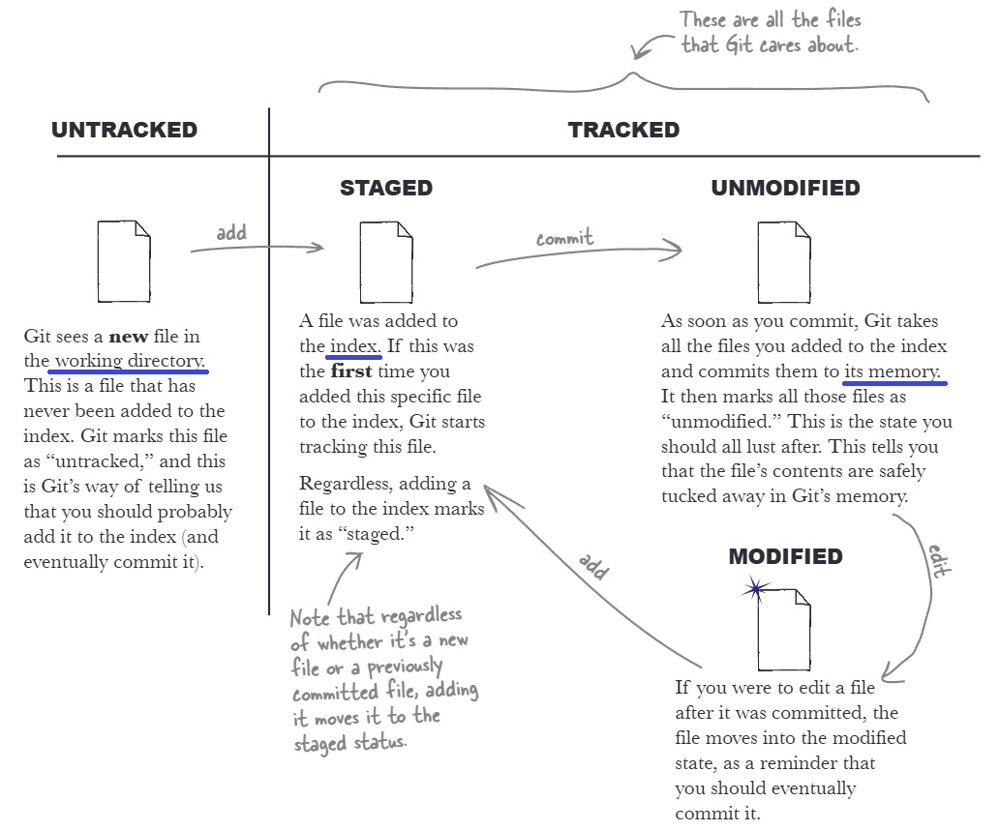

Введение
Git - распределённая система управления версиями. Гит позволяет создавать разные версии программы, которые можно развивать самостоятельно, либо соединять с основной версией.
Папка со всеми файлами (версиями кода) называется репозиторием (repository). Когда добавляется изменение в файл, новая версия называется коммитом (commit). У каждого такого коммита есть своё имя, к которому можно обращаться, и при необходимости возвращать программу до предыдущих версий в случае неожиданной ошибки. Существуют ветки (branch), на которых расположены разные коммиты. Главная ветка называется master или main, она является "стволом" и основной частью всего кода программы. От неё могут идти другие ветки с разными названиями. Ветки и коммиты можно визуально представить в виде графа.
После установки Git следует указать имя и почту:
git config --global user.name "John Doe"
git config --global user.email johndoe@example.com
# указать редактор nano вместо vi
git config --global core.editor "nano"
# запретить экранировать символы, выходящие за пределы стандартной латиницы (ASCII), чтобы корректно отображать русские названия файлов во всех командах
git config --global core.quotepath false
git initинициализация нового репозиторияgit add file_nameдобавить файл в гитgit commit -m "commit_name"зафиксировать файл с пояснением
Репозиторий Git разделен на 2 части: индекс и объектная база данных.
git addпомещает файл в индекс (место для временного хранения изменений)git commitсохраняет файл в объектной базе данных (банк памяти git)
Состояния файлов

- Неотслеживаемые (Untracked).
- Отслеживаемые (Tracked): Индексированный (Staged), Неизмененный (Unmodified), Изменённый (Modified).
С помощью команд git status и git add -i можно узнать о состояниях файлов. Стоит упомянуть, что когда вы добавляете в индекс новую копию того же файла, Git заменяет старую копию новой. Игнорирование файлов достигается с помощью перечисления их в файл .gitignore.
Каждый последующий коммит ссылается на предыдущий (потомки ссылаются на родителей, а не наоборот). От чего история коммитов называется направленным ациклическим графом (directed acyclic graph, DAG).
Ветки
На самом деле ветка - ссылка на коммит по его ID. Эта ссылка обновляется всякий раз, когда вы делаете новый коммит.
git branchотображение списка ветокgit branch my-first-branchсоздание новой веткиgit branch -vvподробная информация по веткамgit branch -aсписок всех веток, включая ветки слеженияgit branch -vузнать идентификатор коммитаgit branch -d old-branchудалить веткуgit branch -D old-branchпринудительно удалить ветку (например, обособленную)git branch name_branch ID_commitявно указать ID коммита, на котором должна быть основана веткаgit switch -c my-first-branchсоздание новой ветки и переход на неёgit switch my-first-branchпереключение на другую ветку (более старая командаgit checkout)
Каждый раз, когда вы переключаете ветки, Git переписывает рабочий каталог, чтобы он выглядел так, как будто вы сделали последний коммит в ветке, на которую только что переключились.
Слияние веток
Основную ветку, в которой соединяют ветки, называют интеграционной, а остальные - функциональными или рабочими.
git merge my-second-branchслить ветку my-second-branch с той, в которой находимся- состояние
fast-forward(ускоренная перемотка) - доведение интеграционной ветки до состояния другого коммита. - есть разница какую ветку с чем сливать, а именно - изменений не произойдёт, если мы производную ветку скрестим с той, на которой она основана.
- состояние
recursive strategy() - когда у нас есть две ветки, разветвленные от основной, мы можем соединить их в единую, добавив файлы "в кучу". - при клонировании репозитория создаётся ветка
origin/master, которая называется веткой слежения за удалённым репозиторием. эти ветки нельзя изменять, они предназначены для управления гитом.
Конфликты возникают тогда, когда при слиянии на разных ветках был изменён один и тот же файл. в таком случае git выведет ошибку и укажет на изменения внутри самого файла. для решения проблемы можно: отменить изменения в первой ветке, оставить изменения первой ветки, оставить оба изменения, отменить оба изменения. после этого нужно снова добавить файл в гит и сделать коммит.
git merge --squash developсделать слияние ветки develop в режиме squash (без авто-коммита)git merge --squash develop --allow-unrelated-historiesпринудительно слить ветки, у которых нет ни одного общего предка (unrelated histories)git checkout --theirs .принять все файлы из ветки develop для конфликтных мест
Существует команда git rebase, которая в отличие от merge переписывает историю коммитов, делая её идеально прямой. Происходит это таким образом: берет коммиты из рабочей ветки, временно откладывает их в сторону, обновляет ветку до самого свежего состояния main, а затем по очереди применяет (копирует) коммиты сверху. Следует использовать rebase только для обновления локальных приватных веток свежим кодом из main перед отправкой пул-реквеста ради сохранения чистоты истории, полностью исключив его применение для общих удаленных веток (main или develop), над которыми работают другие участники команды.
Различия коммитов
git logвыводит список коммитов в веткеgit log --onelineвыведет список коммитов с кратким описанием (этот флаг объединяет в себе другие:--pretty=oneline --abbrev-commit)git log --oneline --all --graph- список коммитов на всех ветках в виде графаgit diff file1покажет построчные изменения между файлом в индексе и в рабочем каталогеgit diff --word-diff file1покажет изменения, выделяя слова, а не целые строкиgit diff --cached file1сравнивает содержимое в базе данных объектов с индексом (аналог флаг--staged)git diff branch1 branch2сравнивает последние коммиты двух ветокgit cherry-pickперемещает коммиты из одной ветки в другую
Рекомендуется иметь коммиты с заголовком и телом, например:
feat: обновить имена стилей CSS
- выровнять имена и описания всех классов CSS
Эта статья на хабре является хорошей шпаргалкой по стандарту Conventional Commits, описывающему оформление коммитов. Некоторые типы коммитов:
feat:при представлении новой функции или улучшенияfix:при исправлении ошибокdocs:при внесении исправлений в документациюchore:при изменениях, затрагивающих инструменты, такие как Gittest:добавляете или модифицируете тесты
Отмена изменений
git restore fileвосстановление файла в рабочем каталоге до версии в индексе (обратное действиеgit add)git restore --staged fileвосстанавливает файл после коммита из объектной базы (обратное действиеgit commit)git rm fileудаление отслеживаемого файла из рабочего каталога и индекса (объектную базу не трогает, чтобы случайно не прервать цепочку коммитов)git rm -r name-dirудаление каталога вместе с внутренними файламиgit rm --cached fileпрекратить отслеживание файла, но при этом физически оставить в рабочем каталогеgit mv file-a file-bпереименование и перемещение файла в рабочем каталоге и индексеgit commit --amend -m "commit text"переименование последнего коммита (важно, чтобы рабочий каталог был чистым и без изменений)git branch -m branch1 branch2переименование ветки (если требуется переименовать ветку, в которой находишься, достаточно указать 1 аргумент)git reset HEAD~1удаление последнего коммита путем перемещения к предыдущемуgit reset --soft HEAD~1перемещает файлы из объектной базы в индекс и рабочий каталогgit reset --mixed HEAD~1изменяет и объектную базу, и индекс, сохраняя всё в рабочий каталог (параметр по умолчанию)git reset --hard HEAD~1перезаписывает объектную базу, индекс и рабочий каталог до предыдущего коммитаgit revert HEADделает инверсию действий последнего коммита (возвращает удалённые строки, удаляет новые); создаёт новый "антикоммит"
Метка HEAD служит ориентиром, в каком месте находится пользователь, а именно ссылается на последний коммит в ветке. Так же HEAD указывает на родителя следующих коммитов. Таким образом метку можно использовать для:
git diff HEAD~1 HEADсравнение коммитов (HEAD~n, где n - на сколько коммитов спуститься вниз)git diff HEAD^1~1 HEADсравнение коммитов при слиянии веток (где ^1 - основная ветка, ^2 - дополняющая; комбинация позволяет ссылать не только на родителя, но и на "дедушку")
Командная работа
git clone https://github.com/user/repo.gitклонирование репозитория с удалённого сервераgit push(=git push origin) отправка коммита на удалённый серверgit push --set-upstream origin second-branchотправить рабочую веткуgit config --global push.default simple(по умолчанию) безопасная настройкаgit remote -vрасположение удалённого репозитория
pull request - запрос на слияние - используется для совместной работы. Участники проекта могут смотреть вносимые изменения, обсуждать их и только после merge pull request они уйдут в основную ветку.
git pullпроверяет новые коммиты на удалённом репозитории для конкректной ветки и выгружает их (git fetch+git merge ветка-слежения)git fetchобновляет и выгружает все ветки слежения с удалённого репозитория- процесс удаления рабочих веток:
- например, после слияния с основной удаляем с удаленного репозитория ветку,
- локально смотрим изменения
git fetch -p, - удаляем локально ветку
git branch -D feat-a, - догоняем изменения основной ветки
git merge origin/main, - смотрим граф коммитов
git log --graph --oneline --all
Поиск по репозиторию
git blame fileпоказывает последние изменения файла с коммитамиgit blame -s fileскрыть автора и дату коммитаgit blame <ID> fileподать ID коммита, чтобы посмотреть изменения на тот моментgit grep wordищет слово или фразу в остлеживаемых файлах-i: игнорировать регистр-n: показывать номера строк-l: показать только список файловgit log -S wordищет точное совпадение строки, только если эта строка была добавлена с нуля или полностью удалена, т.е. изменилось количествоgit log -S word fileискать только в пределах одного файлаgit log -G wordищет изменения с помощью регулярных выражений, если строка была любым образом измененаgit log -pпокажет фактические изменения, которые внесли коммиты (пример:git log -p --oneline -S word --word-diff)git log --grep "words"ищет коммиты с указанным описаниемgit checkout <ID>зайти на конкретный коммит (рекомендуется проводить подобное на отдельных ветках)
git bisect — это режим автоматического поиска коммита, который внёс баг/опечатку, методом бинарного поиска (деления истории пополам). этапы:
- git bisect start запускает режим поиска бага и очищает историю для разметки.
- git bisect bad помечает текущий коммит (или указанный) как «плохой», то есть содержащий ошибку.
- git bisect good <ID>
- cat appetizers.md выводит содержимое файла на экран, чтобы могли проверить, присутствует ли в нём опечатка.
- git bisect good помечает текущий проверенный коммит как «хороший», подтверждая, что в нём опечатки ещё нет.
- git bisect reset завершает процесс поиска и возвращает на исходную ветку, в которой находились до начала тестирования.
Файл конфигурации гита
Внутри репозитория лежит файл .git/config. Параметры гита можно менять как глобально (флаг --global), так и локально (флаг --local), и в рамках одного репозитория локальные настройки выше. Для того, чтобы убрать запись используется флаг --unset, например, локально убрать запись о почте git config --local --unset user.email.
git config --list --show-originпросмотреть список параметров с указанием глобальных и локальных настроекgit config --global alias.loga "log --oneline --graph --all"назначить псевдоним (теперь можно вызвать простоgit loga)
Перечисление файлов и каталогов в файл .gitignore позволяют не заливать ненужные системные, временные или конфиденциальные данные. можно настроить глобально: git config --global core.excludesfile ~/.gitignore_global
Прочее
Теги, как и ветки, также являются ссылками на коммиты, при этом они никогда не перемещаются. Их используются для ориентиров в истории проектов, например, обозначив определенную версию программного обеспечения. Команды fetch, push и pull поддерживают флаг --tags.
git tag v1.0.0git tag v1.0.0 049896fс указанием ID коммитаgit tag -lпоказать список тегов
Тайники прячат изменения в стек в рабочем каталоге для того, чтобы была возможность переместиться на другую ветку и вернуть их.
git stashпрячет измененияgit stash pop --indexполучает все изменения в последнем тайнике и возвращает их
Журнал перемещения указателя HEAD можно просмотреть командой git reflog.
Моё пространство
Этот репозиторий имеет две ветки на моём компьютере. main является публичной, финальной версией моих конспектов. develop является приватной, в ней я храню черновики и наброски заметок. Для того, чтобы таким образом организовать пространство, нам потребуется иметь два репозитория на гитхабе, так как отдельно нельзя настроить ветки.
Рекомендую сгенерировать и добавить SSH ключ на GitHub для удобства авторизации. Далее на сайте GitHub создайте два репозитория, например, linux-enjoyer - публичный и linux-enjoyer-develop - приватный. Локально проходимся по следующим шагам:
mkdir linux-enjoyer; cd linux-enjoyerсоздаём репозиторий и переходим в него;git initинициализируем репозиторий;git branch -M mainсоздаём основную веткуmain, которая будет заливаться на публичный репо;touch README.mdсоздаём файл;git add README.mdделаем его отслеживаемым;git commit -m "init repo"делаем коммит;git remote add origin git@github.com:user/linux-enjoyer.gitуказываем публичный репозиторий под именемorigin(user меняем на свой ник на гитхаб);git remote add origin-private git@github.com:user/linux-enjoyer-develop.gitуказываем приватный репозиторий под именемorigin-private;git branchпроверить на какой ветке находимся;git push -u origin mainотправить веткуmainв публичный репозиторийorigin;git switch -c developсоздаём и переключаемся на веткуdevelop, которая будет видна только нам;echo "# Черновики" > README.mdизменяем файл;git add README.md; git commit -m "init drafts"фиксируем изменения;git push -u origin-private developотправляем веткуdevelopв приватный репозиторийorigin-private;git branch -vvпроверить ветки.
Вывод команды git branch -vv представлен ниже. Тоже самое можно проверить на сайте GitHub. Теперь ветки будут пушиться в разные места, при этом их удобно локально сливать и следить за изменениями.
* develop 937429d [origin-private/develop] init drafts
main dde68a4 [origin/main] init repo